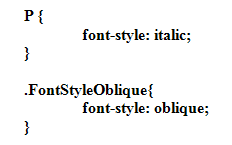
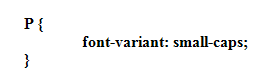
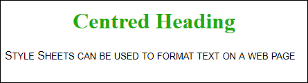
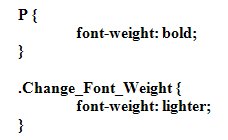
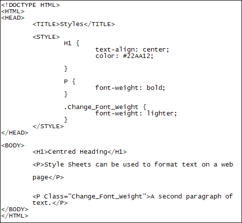

Font Style, Font Weight, Font Variant
Font-Style
There are only three font styles to choose from: normal, italic, and oblique. Of course, the default is normal, so you don't have to use font-style unless you want italic or oblique text. You use them like this:

There's not a great deal of difference between italic and oblique, though. If you want to see the difference, use a sans-serif font, with a large font size.
Font-Variant
Font-Variant is used when you want small caps for text:

And here's what it looks like in a browser:

Font-Weight
The weight of a font is how thick it is. There are lots of values you can use here. The most common one is Bold. But you can also have Bolder and Lighter. As well as the named weight you can also use a number from 100 to 900. It's better to stick with round numbers, though, as the difference between 100 and 150 is practically impossible to see. Here's how to use font-weight:

Add a second paragraph of text between your BODY tags and try it out:

Here, we've set all paragraph tags to have bold text. Then we've added a Class Selector called Change_Font_Weight, which we've set to lighter. We've then used this class on the second paragraph.
Save your work and refresh your browser to see what effect it has.
Exercise
Try some of the number font weights to see how they work. How different is 100
from 900?
We'll take a break from CSS, now, but come back to it later. In the next section, you'll learn how to insert images into a web page.